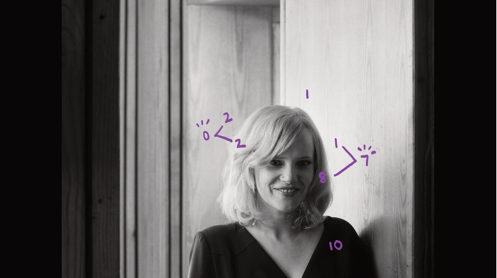
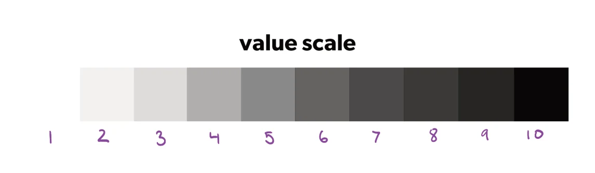

明暗值（value）指画面里一个元素有多亮或多暗，用 1–10 来标：1 是纯白，10 是纯黑。
反差（contrast）来自把明暗值相差很大的两个元素放在一起。用两者的数值相减就能量出反差：白色物体挨着黑色物体，就是 10−1=9，反差值为 9。
高反差的区域会抓住观众的注意力；低反差的区域不容易看清，会退到次要位置。
所以：画面的视觉焦点，应该放在反差最高的地方。
The word value refers to how light or dark an element in your composition is. Value is assigned on a scale of 1 -10: 1 refers to pure white, 10 refers to pure black.
Contrast is created by placing two visual elements next to each other that have a large disparity in their values. You can determine the contrast of two visual elements by subtracting their values from one another and measuring the difference. For example, a white object next to black object would be measured by subtracting 1 from 10, giving a contrast value of 9. (10-1=9).
Areas of high contrast in an image draw an audience’s attention. Areas of low contrast are more difficult to discern, becoming secondary to areas of high contrast.
Therefore: the focal point of your image should be area containing the highest contrast.